Plus Ça Change
I gave this talk at SciPy‘06. A few things have changed since then, but it’s suprising how many haven’t:
- Higher productivity still gets more people into the room than correctness or reproducibility.
- “How to publish” was as absent then as it is now. (Figuring out what to teach about publishing science in the 21st Century is pretty close to the top of my to-do list these days.)
- I’m still an awful graphic designer.
The biggest thing I notice, though, is that there was no mention of how to teach. It would be another three years before I encountered the literature on teaching and learning, and another two years after that before I started taking it seriously.
Selling Python to Scientists
or
What I’ve Learned from Software Carpentry
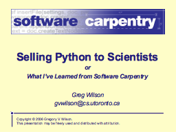
- Copyright © 2006 Gregory V. Wilson.
- This presentation may be freely used and distributed with attribution.
Plus Ça Change…
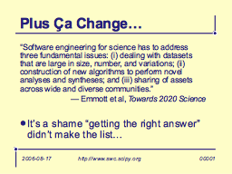
Software engineering for science has to address three fundamental issues: (i) dealing with datasets that are large in size, number, and variations; (ii) construction of new algorithms to perform novel analyses and syntheses; and (iii) sharing of assets across wide and diverse communities.
– Emmott et al, *Towards 2020 Science*
- It’s a shame “getting the right answer” didn’t make the list…
The State of Play
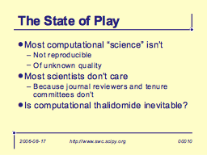
- Most computational “science” isn’t
- Not reproducible
- Of unknown quality
- Most scientists don’t care
- Because journal reviewers and tenure committees don’t
- Is computational thalidomide inevitable?
Productivity? Tell Me More…
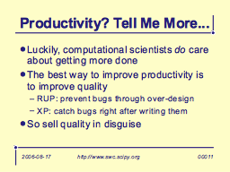
- Luckily, computational scientists do care about getting more done
- The best way to improve productivity is to improve quality
- RUP: prevent bugs through over-design
- XP: catch bugs right after writing them
- So sell quality in disguise
You Can’t Sell a Language
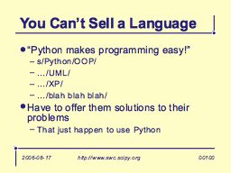
- “Python makes programming easy!”
- s/Python/OOP/
- …/UML/
- …/XP/
- …/blah blah blah/
- Have to offer them solutions to their problems
- That just happen to use Python
What Are Their Problems?
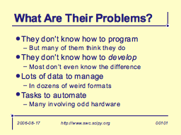
- They don’t know how to program
- But many of them think they do
- They don’t know how to develop
- Most don’t even know the difference
- Lots of data to manage
- In dozens of weird formats
- Tasks to automate
- Many involving odd hardware
Timing, Timing, Timing
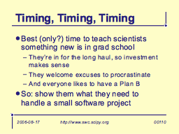
- Best (only?) time to teach scientists something new is in grad school
- They’re in for the long haul, so investment makes sense
- They welcome excuses to procrastinate
- And everyone likes to have a Plan B
- So: show them what they need to handle a small software project
… Version Control
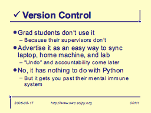
- Grad students don’t use it
- Because their supervisors don’t
- Advertise it as an easy way to sync laptop, home machine, and lab
- “Undo” and accountability come later
- No, it has nothing to do with Python
- But it gets you past their mental immune system
… Build
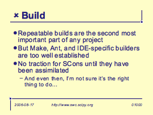
- Repeatable builds are the second most important part of any project
- But Make, Ant, and IDE-specific builders are too well established
- No traction for SCons until they have been assimilated
- And even then, I’m not sure it’s the right thing to do…
… Data Crunching
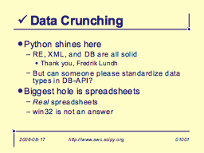
- Python shines here
- RE, XML, and DB are all solid
- Thank you, Fredrik Lundh
- But can someone please standardize data types in DB-API?
- RE, XML, and DB are all solid
- Biggest hole is spreadsheets
- Real spreadsheets
- win32 is not an answer
… Prototyping and GUIs
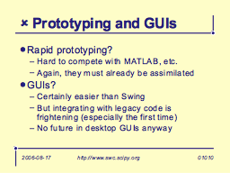
- Rapid prototyping?
- Hard to compete with MATLAB, etc.
- Again, they must already be assimilated
- GUIs?
- Certainly easier than Swing
- But integrating with legacy code is frightening (especially the first time)
- No future in desktop GUIs anyway
? Testing
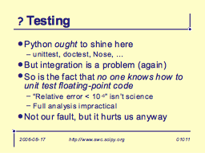
- Python ought to shine here
- unittest, doctest, Nose, …
- But integration is a problem (again)
- So is the fact that no one knows how to unit test floating-point code
- “Relative error < 10-6” isn’t science
- Full analysis impractical
- Not our fault, but it hurts us anyway
… Design
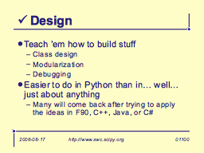
- Teach ‘em how to build stuff
- Class design
- Modularization
- Debugging
- Easier to do in Python than in… well… just about anything
- Many will come back after trying to apply the ideas in F90, C++, Java, or C#
Testing Revisited
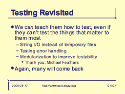
- We can teach them how to test, even if they can’t test the things that matter to them most
- String I/O instead of temporary files
- Testing error handling
- Modularization to improve testability
- Thank you, Michael Feathers
- Again, many will come back
… Process
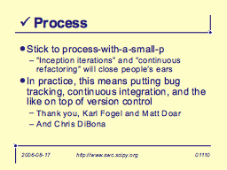
- Stick to process-with-a-small-p
- “Inception iterations” and “continuous refactoring” will close people’s ears
- In practice, this means putting bug tracking, continuous integration, and the like on top of version control
- Thank you, Karl Fogel and Matt Doar
- And Chris DiBona
Portal (n): a gateway…
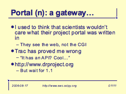
- I used to think that scientists wouldn’t care what their project portal was written in
- They see the web, not the CGI
- Trac has proved me wrong
- “It has an API? Cool…”
- http://www.drproject.org
- But wait for 1.1
CS 101: The Final Frontier
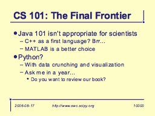
- Java 101 isn’t appropriate for scientists
- C++ as a first language? Brr…
- MATLAB is a better choice
- Python?
- With data crunching and visualization
- Ask me in a year…
- Do you want to review our book?
Thank You
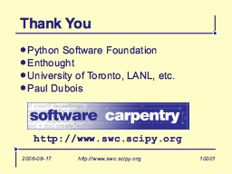
- Python Software Foundation
- Enthought
- University of Toronto, LANL, etc.
- Paul Dubois
Favorites
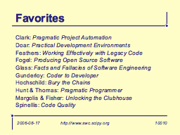
- Clark: Pragmatic Project Automation
- Doar: Practical Development Environments
- Feathers: Working Effectively with Legacy Code
- Fogel: Producing Open Source Software
- Glass: Facts and Fallacies of Software Engineering
- Gunderloy: Coder to Developer
- Hochschild: Bury the Chains
- Hunt & Thomas: Pragmatic Programmer
- Margolis & Fisher: Unlocking the Clubhouse
- Spinellis: Code Quality